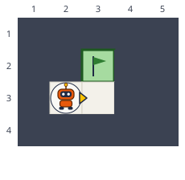
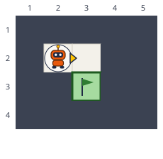

Verzweigung
Mit einem KI-Tutor lernen
Ein KI-Tutor erklärt dir diese Seite und hilft dir bei den Aufgaben. Wähl deinen Assistenten:
Mit Claude öffnen Mit ChatGPT öffnen Mit Mistral Vibe öffnen
Du nutzt dein eigenes Konto beim Anbieter. Der Assistent ist kein Angebot von lernapps.net: lernapps liefert nur Inhalte und Aufgaben. Die Wahl gilt für alle Seiten, nur auf diesem Gerät.
Wand oder keine Wand?
Im Klassenchat der 7b:
Lea: Woher soll Kiko wissen, ob vor ihm eine Wand ist?
Frau Berg: Kiko hat Sensoren. Er kann fragen: „Wand voraus?“ Je nach Antwort macht er etwas anderes.
Jona: Dann reicht ein Programm für alle Spielfelder? 😮
Hier lernst du, wie ein Programm abhängig von einer Bedingung verschiedene Wege nimmt.
Aufgabe
Lösung
Kiko endet auf Feld A. richtige Antwort
Wand voraus? Ja: Kiko dreht sich nach rechts und schaut im Bild nach unten. Dann der Block nach der Verzweigung: ein Feld vorwärts.
Kiko endet auf Feld B.
Du hast beide Zweige ausgeführt. Kiko macht entweder „dann“ oder „sonst“, nie beides.
Kiko läuft gegen die Wand.
Das wäre der „sonst“-Zweig. Die Bedingung ist aber wahr, also gilt der „dann“-Zweig.
Kiko dreht sich und bleibt auf seinem Feld.
Du hast den letzten Block vergessen. Er steht nach der Verzweigung und wird immer ausgeführt.
Die Bedingung „Wand voraus?“ ist wahr, also führt Kiko den „dann“-Zweig aus. Der Block danach gilt in jedem Fall.
Eine Frage, zwei Wege
Der Block „Wand voraus?“ ist eine Bedingung: Kikos Sensor antwortet mit wahr oder falsch. Bei wahr führt Kiko die Blöcke nach „dann“ aus, bei falsch die nach „sonst“. Danach geht es mit dem nächsten Block weiter. Kiko kann auch fragen: „Weg frei?“ (das Gegenteil von „Wand voraus?“), „am Ziel?“, „Wand links?“ und „Wand rechts?“.
- Sensor
Ein Sensor ist der Teil von Kiko, der etwas prüft, zum Beispiel ob vor ihm eine Wand ist.
- Bedingung
Eine Bedingung ist eine Frage, auf die es nur die Antworten wahr oder falsch gibt (ja oder nein).
- Verzweigung
Eine Verzweigung (wenn … dann … sonst) legt fest, dass ein Algorithmus je nach Bedingung verschiedene Anweisungen ausführt.
 © CC-BY-4.0
© CC-BY-4.0Spielfeld 1. Dasselbe Programm, aber hier ist keine Wand voraus.
Merke
Kiko führt immer nur einen Zweig aus. Teste ein Programm mit Verzweigung darum auf mehreren Spielfeldern, damit jeder Zweig einmal drankommt. Fehlt „sonst“ (einseitige Verzweigung), überspringt Kiko bei falsch den „dann“-Teil und macht mit dem nächsten Block weiter.
Selbst ausprobieren
Ohne Computer: Legt mit den Karten für Entscheidungen „wenn ___ dann“, „sonst“ und „Wand voraus?“ ein Programm. Kiko spielt es zweimal: einmal mit einer Wand vor sich, einmal ohne.

Mit Computer: Das Ziel ist mal im Bild oben, mal unten. Bau ein Programm, das auf beiden Spielfeldern klappt; die Werkstatt nennt sie „Rätsel“. Du brauchst dafür „Wand links?“: Challenge „Oben oder unten?“ öffnen

© CC-BY-4.0Spielfeld 1 der Challenge, Ziel oben

© CC-BY-4.0Spielfeld 2 der Challenge, Ziel unten
Übung
Aufgabe
Lösung
Richtige Antwort: 2
Keine Wand voraus: Kiko nimmt den „sonst“-Zweig und geht ein Feld. Der Block nach der Verzweigung bringt ihn ein zweites Feld weiter.
Aufgabe
Lösung
Richtige Antwort: Vor Kiko ist frei. – ein Feld vorwärts; Vor Kiko ist eine Wand. – nach links drehen
Ist der Weg frei, gilt „dann“, sonst gilt „sonst“. Beide Zweige zusammen kommen nie vor.
Aufgabe
Lösung
„Wand voraus?“ richtige Antwort
Entweder ist eine Wand vor Kiko oder nicht.
„am Ziel?“ richtige Antwort
Kiko steht auf dem Ziel oder nicht. Auch das ist wahr oder falsch.
„gehe vorwärts“
Das ist ein Befehl. Kiko tut etwas, er fragt nichts.
„Weg frei?“ richtige Antwort
Der Weg vor Kiko ist frei oder nicht. Es ist das Gegenteil von „Wand voraus?“.
„Wie weit ist die Wand?“
Darauf ist die Antwort eine Zahl, nicht wahr oder falsch. So einen Block hat Kiko nicht.
Eine Bedingung ist eine Frage mit der Antwort wahr oder falsch. Befehle und Fragen nach Zahlen sind keine Bedingungen.
Aufgabe
Lösung
Richtige Antwort: Die Aussage stimmt.
Die Bedingung ist falsch, und ohne „sonst“ gibt es nichts zu tun. Das ist eine einseitige Verzweigung.
Wie es weitergeht
Du kannst jetzt mit „wenn … dann … sonst“ ein Programm bauen, das auf verschiedenen Spielfeldern klappt. Jona schreibt: „Mein Gang ist 9 Felder lang. Muss ich wirklich 9 Blöcke ziehen? 😩“ Auf der nächsten Seite lernst du, wie es kürzer geht.
Fehler gefunden oder eine Idee für diese App?